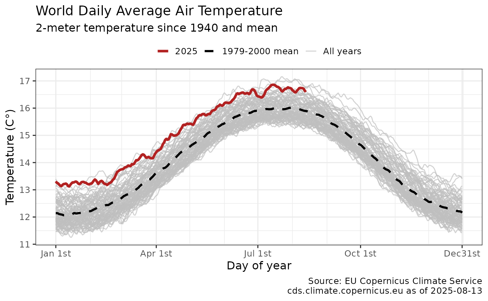

Retrieves the daily air or sea-surface temperature data since 1979 from ClimateReanalyzer.org Source is University of Maine Climate Change Institute. https://climatereanalyzer.org/clim/t2_daily/
Usage
get_dailytemp(
use_cache = TRUE,
write_cache = getOption("hs_write_cache"),
region = "W",
mean_start = if (region == "WS" | region == "AS") 1982 else 1979,
mean_end = 2000
)Arguments
- use_cache
(boolean) Return cached data if available, defaults to TRUE. Use FALSE to fetch updated data.
- write_cache
(boolean) Write data to cache, defaults to FALSE. Use TRUE to write data to cache for later use. Can also be set using options(hs_write_cache=TRUE)
- region
(string) Region selection, defaults to world air temperature. Options are: World Air "W", Northern Hemisphere Air "NW", Southern Hemisphere Air "SW", Tropics Air "TR", Arctic Air "AR", Antarctica Air "AN", World Sea Surface "WS", and North Atlantic Sea Surface "NS".
- mean_start
(numeric) Start year for historic mean, defaults to 1979.
- mean_end
(numeric) End year for historic mean, defaults to 2000.
Value
Invisibly returns a tibble with the daily 2-meter air or sea surface temperatures since 1979 as well as historic mean by day-of-year and current anomaly versus mean.
get_dailytemp invisibly returns a tibble with the daily temperatures since 1979 as well as mean by day-of-year and anomaly. Default to world data, but region can be selected among six options.
Region options include world air (default), Northern Hemisphere air, Southern Hemisphere air, Tropics air, Arctic air, Antarctic air, World sea surface and North Atlantic sea surface and is stored in attribute of output. The historic daily mean-by-day period defaults to 1979-2000. This range can be optionally modified.
Data are updated daily. For day-of-year mean removes observations from February 29 on leap years.
References
ClimateReanalyzer.org: https://climatereanalyzer.org/clim/t2_daily/
Notes: The "Daily 2-meter Air Temperature" page shows area-weighted daily means calculated from the 2-meter air temperature variable from the Climate Forecast System version 2 and Climate Forecast System Reanalysis, which are publicly available products of the NOAA National Centers for Environmental Prediction. Sea surface is from NOAA Optimum Interpolation SST (OISST) version 2.1. OISST is a 0.25°x0.25° gridded dataset that provides estimates of temperature based on a blend of satellite, ship, and buoy observations. The dataset spans 1 January 1982 to present with a 1 to 2-day lag from the current day.
Author
Hernando Cortina, hch@alum.mit.edu
Examples
# \donttest{
# Fetch temp anomaly from cache if available:
dailytemps <- get_dailytemp()
#
# Force cache refresh:
dailytemps <- get_dailytemp(use_cache=FALSE)
#
# Review cache contents and last update dates:
hockeystick_cache_details()
#> <hockeystick cached files>
#> directory: /home/runner/.cache/R/hockeystick
#>
#
# Plot output using package's built-in ggplot2 settings
plot_dailytemp(dailytemps)

# Change region to Arctic
arctictemp <- get_dailytemp(region='AR', use_cache=FALSE)# }